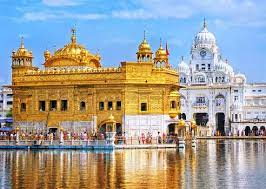

Mathura
A Spritual City in Uttar Pradesh
Mathura is one of the seven sacred cities of the Hindus. It is the traditional birthplace of the god Krishna (Krishna Janmabhoomi) and the primary site of pilgrimage for the annual celebration of Janmashtami. You will love temple hopping, exploring the ghats and the lively Holi celebrations.
Vrindavan
A secred site for the Hindu deity Krishna
Vrindavan is considered to be a sacred place for Vaisnavism tradition of Hinduism. It is believed that Krishna spent part of his childhood in this city. The other prominent areas surrounding Vrindavan are Govardhana, Gokul, Nandgaon, Barsana, Mathura and Bhandirvan,it is a historic town in Uttar Pradesh's Mathura district.
Varanasi
Uttar Pradesh's Spiritual Capital
The land of Varanasi (Kashi) has been the ultimate pilgrimage spot for Hindus for ages. Hindus believe that one who is graced to die on the land of Varanasi would attain salvation and freedom from the cycle of birth and re-birth. Abode of Lord Shiva and Parvati, the origins of Varanasi are yet unknown, Varanasi is the oldest city in the world.
Tirupati
Spiritual City in Andhra Pradesh
Tirupati is home to the sacred Sri Venkateswara temple, sitting atop the beautiful Tirumala Hills, and thus considered as an epicenter of spiritual devotion.It is famous for Sri Venkateswara Temple, one of the most visited pilgrimage sites in the world. People from all over the world come to Tirupati to seek the blessings of Lord Venkateswara.
Haridwar
Ancient Pilgrimage Town in Uttrakhand
Located on the banks of River Ganges, this sacred town is thronged by devotees in large numbers and serves as a gateway to the Char Dhams Kedarnath, Badrinath, Gangotri and Yamunotri.This is a place of religious importance for the Hindus. Triveni Sangam is a confluence of three rivers, the Mighty Ganges (Ganga), Yamuna and Saraswati Rivers.
Kedarnath
The Land of Lord Shiva
Located at the base of white, snow-laden peaks in Uttarakhand, and home to one of the most iconic of the Char Dham temples, Kedarnath and its surrounding areas are an important pilgrimage site for Hindus who come here from all over the world.
Rameshwaram
Beautiful Pilgrimage Site in Tamil Nadu
Made famous by the epic Ramayana, Rameshwaram is a quaint beach town and a popular Hindu pilgrimage destination that also attracts nature lovers and adventure enthusiasts.A stone's throw from Rameswaram lies Dhanushkodi that has been endowed with magical natural beauty.

Amritsar
The Spiritual Capital of Punjab
Home to the legendary Sikh shrine Golden Temple, Amritsar is fondly called Ambarsar and will steal your heart with its colourful bazaars, lip-smacking street food, shopping hubs and historical monuments.Amritsar was founded by Sri Guru Ramdass ji, the fourth guru of the Sikhs in about 1574 A.D.
Rishikesh
The gateway to the Char Dham
Known as the ‘Yoga Capital of the World’, Rishikesh is a serene Himalayan town nestled on the banks of River Ganges. It is famous for its ancient temples, hippie cafes and dare-devil adventure sports.Rishikesh is also known as gateway to the Char Dham.Char Dham is four popular holy temples on the hills (Kedarnath, Badrinath, Gangotri, and Yamunotri)